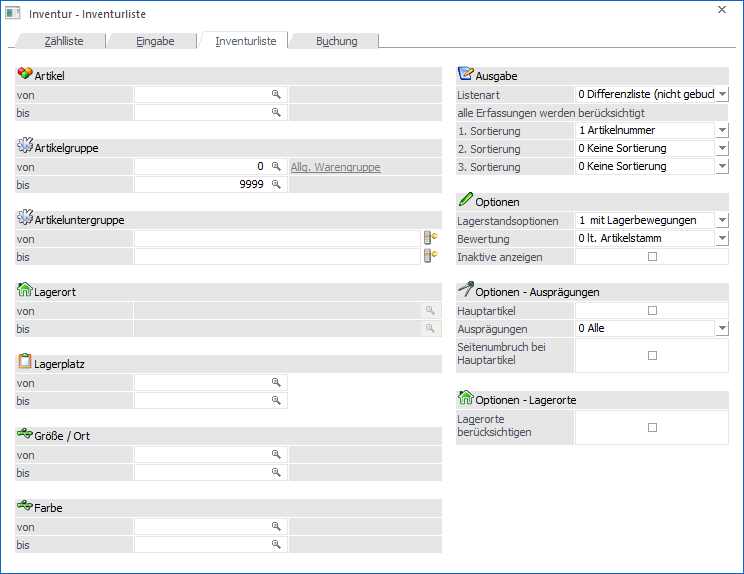
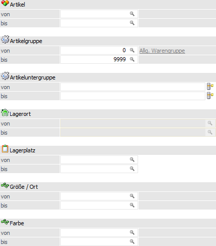
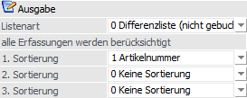
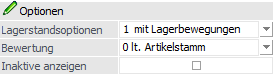
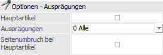
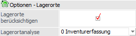
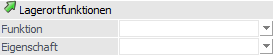
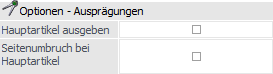
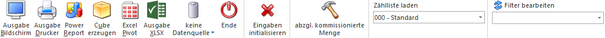

In dem Register "Inventurliste" können unterschiedliche Listen bzw. Auswertungen, bezogen auf die Inventur, ausgegeben werden. Hierbei sind folgende Punkte zu beachten:
ü Artikeltypen
Die folgenden
Artikeltypen werden in den Inventur nicht berücksichtigt:
ü 1 - Lagerneutraler Artikel
ü 3 - Handelsstückliste (Ausnahme "Fertigungsstückliste")
ü Zählliste
Wird mit einer zuvor
definierten Zählliste gearbeitet
(siehe Button "Zählliste laden"), so stehen nur die Einstellungen "Listenart",
"1. Sortierung / 2. Sortierung / 3. Sortierung", "Bewertung", "Hauptartikel" und
"Seitenumbruch bei Hauptartikel" zur Verfügung.
ü Benutzerspezifische
Speicherung
Die folgenden Einstellungen werden benutzerspezifisch gespeichert
und zum Teil automatisch in die Register Zählliste bzw. Eingabe übertragen:
ü 1. Sortierung / 2. Sortierung / 3. Sortierung
ü Lagerstandsoptionen
ü Bewertung (ausschließlich benutzerspezifische Speicherung)
ü Inaktive anzeigen
ü Hauptartikel
ü Ausprägungen
ü Lagerorte berücksichtigen (Register "Zählliste")
ü Anwahl des Buttons "abzgl. Kommissionierte Menge" (ausschließlich benutzerspezifische Speicherung)

Die Ausgabe der Auswertung / Liste kann nach den folgenden Kriterien eingeschränkt bzw. definiert werden:
Selektion

Ø Artikel von / bis
An dieser Stelle können die Artikel für die Auswertung hinterlegt werden.
Ø Artikelgruppe von / bis
In diesen Feldern kann nach den Artikelgruppen eingeschränkt werden, welche in der Liste berücksichtigt werden sollen.
Ø Artikeluntergruppe von / bis
An dieser Stelle kann nach den Artikeluntergruppen eingeschränkt werden. Bleiben die Felder leer, so werden alle Artikel aller Artikeluntergruppen in der Liste berücksichtigt.
Ø Lagerort von / bis
Für Artikel mit einer Lagerortstruktur können in diesen Feldern eine Selektion auf die Lagerorte vorgenommen werden. Artikel ohne Lagerortstruktur sind von dieser Selektion nicht betroffen.
Hinweis
Eine Selektion an dieser Stelle ist nur möglich, wenn die Option "Lagerorte berücksichtigen" aktiviert wurde.
Ø Lagerplatz von / bis
Hier kann nach dem Lagerplatz selektiert werden.
Ø Ausprägung 1 von / bis (hier "Größe / Ort")
Zusätzlich kann eine Einschränkung auf die Ausprägung 1 vorgenommen werden. Sobald eine Einschränkung auf Ausprägung 1 vorhanden ist, wird die, unter "Artikel" eingegebene Nummer, als Hauptartikelnummer verwendet.
Beispiel
Wenn unter "Artikel von / bis" die Nummer "10018" und unter Ausprägung 1 "K" bis "E" eingegeben wird, werden alle selektierten Ausprägungsartikel des Artikels 10018 in der Auswertung berücksichtigt.
Ø Ausprägung 2 von / bis (hier "Farbe")
Neben Ausprägung 1 kann auch eine Einschränkung auf die Ausprägung 2 vorgenommen werden. Sobald eine Einschränkung auf Ausprägung 2 vorhanden ist, wird die, unter "Artikel" eingegebene Nummer, als Hauptartikelnummer verwendet.
Beispiel
Wenn unter "Artikel von / bis" die Nummer "CZ010" und unter Ausprägung 2 "GR" bis "ROT" eingegeben wird, werden alle selektierten Ausprägungsartikel des Artikels CZ010 in der Auswertung berücksichtigt.
Ausgabe

Ø Listenart
An dieser Stelle kann die Variante der auszugebenden Liste definiert werden. Folgende Varianten stehen zur Verfügung:
ü 0 - Differenzliste (nicht
gebucht)
Es werden nur Artikel ausgegeben, deren Soll-Menge bzw.
Lagerortbestand eine Differenz zur eingegebenen Ist-Menge aufweist. Hierbei
werden nur die bisher nicht gebuchten Inventurerfassungen berücksichtigt.
ü 1 - Gezählte Artikel (nicht
gebucht)
Es werden nur Artikel ausgegeben, die ab einem einzugebenden Datum
gezählt wurden, unabhängig ob es eine Differenz gibt oder nicht. Hierbei werden
nur die bisher nicht gebuchten Inventurerfassungen berücksichtigt.
ü 2 - Gezählte Artikel
(gebucht)
Es werden nur Artikel ausgegeben, die ab einem einzugebenden Datum
gezählt wurden, unabhängig ob es eine Differenz gibt oder nicht. Hierbei wird
pro Artikel die zuletzt gebuchte Inventurerfassung berücksichtigt.
ü 3 - Nicht gezählte Artikel
Es
werden nur Artikel ausgegeben, die vor einem einzugebenden Datum oder noch nicht
gezählt wurden (unabhängig von der Differenz).
ü 4 - Inventurliste
Es werden
alle Artikel gemäß Selektion ausgegeben. Hierbei ist es irrelevant, ob bereits
eine Inventurerfassung erfolgt ist. Sollte ein Artikel bereits mehrfach gezählt
und gebucht worden sein, so wird die letzte Erfassung zur Ausgabe
herangezogen.
Hinweis
Der Vergleich zwischen Soll- und Ist-Mengen bzw. Lagerortbeständen erfolgt nach den folgenden Varianten:
ü Ohne Zählliste - Artikel ohne
Lagerorte
Die Soll-Menge des Artikels wird aufgrund des "Inventurdatums"
gebildet, d.h. alle Artikeljournalzeilen "<=" (kleiner + gleich) dieses
Datums werden für die Soll-Ermittlung summiert und mit der Ist-Menge der
Inventurerfassung verglichen. Eine mögliche Differenz wird anschließend mit dem
Inventurdatum der Erfassung gebucht.
ü Ohne Zählliste - Artikel mit
Lagerorte
Die Soll-Menge wird pro Lagerort des Artikels aufgrund des
"Inventurdatums" gebildet, d.h. alle Lagerortjournalzeilen "<=" (kleiner +
gleich) dieses Datums werden für die Soll-Ermittlung summiert und mit der
Ist-Menge der Inventurerfassung verglichen. Eine mögliche Differenz wird
anschließend mit dem Inventurdatum der Erfassung gebucht.
ü Mit Zählliste - Artikel ohne
Lagerorte
Die Soll-Menge des Artikels wird aufgrund des "Inventurdatum von"
(gemäß Zählliste) gebildet, d.h. alle Artikeljournalzeilen "<=" (kleiner +
gleich) dieses Datums werden für die Soll-Ermittlung summiert und mit der
Ist-Menge der Inventurerfassung verglichen. Eine mögliche Differenz wird
anschließend mit dem "Inventurdatum von" der Zählliste gebucht.
ü Mit Zählliste - Artikel mit
Lagerorte
Die Soll-Menge wird pro Lagerort des Artikels aufgrund des
"Inventurdatum von" (gemäß Zählliste) gebildet, d.h. alle Lagerortjournalzeilen
"<=" (kleiner + gleich) dieses Datums werden für die Soll-Ermittlung summiert
und mit der Ist-Menge der Inventurerfassung verglichen. Eine mögliche Differenz
wird anschließend mit dem "Inventurdatum von" der Zählliste gebucht.
Ø alle Erfassungen ab… / keine Zählung seit…
Abhängig von der ausgewählten Listenart kann an dieser Stelle ein Selektionsdatum hinterlegt werden.
ü alle Erfassungen ab…
Handelt es
sich um eine Liste der Art "Gezählte Artikel", so kann hier auf das
Inventurdatum eingegrenzt werden. D.h. es werden nur jene Erfassungen bei der
Ausgabe berücksichtigt, welche ">=" (größer + gleich) dem hier hinterlegten
Datum sind.
ü keine Zählung seit…
Handelt es
sich um die Listenart "3 - Nicht gezählte Artikel", so werden zunächst alle
Artikel ohne Inventurerfassung ausgegeben. Zusätzlich erscheinen all jenen
Artikel, deren letztes Inventurdatum "<" (kleiner) dem hier hinterlegten
Datum sind.
Ø 1. Sortierung / 2. Sortierung / 3. Sortierung
An dieser Stelle kann die Sortierung der Liste definiert werden, wobei eine 3-stufige Sortierung möglich ist. Folgende Kriterien stehen hierbei zur Verfügung:
ü 0 - keine Sortierung (nur bei 2. und 3. Sortierung)
ü 1 - Artikelnummer
ü 2 - Artikelbezeichnung
ü 3 - Artikelgruppe
ü 4 - Lagerplatz
ü 5 - Artikeluntergruppe
ü 6 - Ausprägung 1
ü 7 - Ausprägung 2
ü 8 - Lagerort (nur bei 1. Sortierung)
Hinweis
Die Sortierung "Lagerort" steht nur zur Verfügung, wenn die Option "Lagerorte berücksichtigen" aktiviert wurde. Des Weiteren wird die Sortierung initialisiert, sobald die Option "Lagerorte berücksichtigen" geändert wird.
Sollte mit einem Filter gearbeitet werden, so erfolgt die Sortierung standardmäßig über die im Filter getroffenen Angaben, d.h. die hier getroffene Auswahl wird nur genutzt, wenn im Filter kein Sortierkriterium angegeben wurde.
Optionen

Ø Lagerstandsoptionen
An dieser Stelle kann mit Hilfe einer Auswahlliste definiert werden, welche Artikel - aufgrund des Lagerstands bzw. der Lagerbewegungen - in der Liste berücksichtigt werden sollen.
ü 0 - Alle Artikel
Es werden alle
Artikel berücksichtigt.
ü 1 - mit Lagerbewegung
Es werden
alle Artikel berücksichtigt, die im Lager zumindest einmal bewegt wurden. Dabei
wird der Lagerstand nicht berücksichtigt. Jedoch ist hierbei zu beachten, dass
Artikel, die mit derselben Buchungsart und selben Menge zu und wieder abgebucht
werden, dadurch einen Lagerstand von 0 haben, nicht in dieser Einschränkung
ausgegeben / berücksichtigt werden!
ü 2 - mit Lagerstand größer 0
Es
werden alle Artikel berücksichtigt, die einen positiven Lagerstand haben. Dabei
werden Artikel, die zwar Lagerbewegungen aufweisen, aber deren Lagerstand 0 ist,
nicht berücksichtigt.
ü 3 - mit Lagerstand ungleich
0
Hier werden alle Artikel berücksichtigt, deren Lagerstand nicht 0 ist, also
auch Artikel, die einen negativen Lagerstand aufweisen.
ü 4 - mit Lagerstand kleiner
0
Hier werden alle Artikel berücksichtigt, deren Lagerstand kleiner 0
ist.
ü 5 - mit Lagerstand gleich 0 und
Lagerwert ungleich 0
Hier werden alle Artikel berücksichtigt, deren
Lagerstand zwar 0 ist, die jedoch einen Lagerwert aufweisen (egal ob dieser
negativ oder positiv ist)
ü 6 - mit Lagerstand gleich 0
(unabhängig vom Lagerwert)
Hier werden alle Artikel berücksichtigt, deren
Lagerstand 0 ist, unabhängig davon wie hoch der Lagerwert ist.
Ø Bewertung
Die Bewertung in der jeweiligen Auswertung bzw. den Artikeln kann zu folgenden Preisen erfolgen:
ü 0 - lt. Artikelstamm (d.h. nach Einstellung im Artikelstamm/Register "Lager" im Feld "Lagerbewertung")
ü 1 - Einstandspreis
ü 2 - letzter Einkaufspreis
ü 3 - niedrigster Einkaufspreis
ü 4 - letzter Einkaufspreis + Bezugskosten (es werden die Bezugskosten pro Stück berücksichtigt, wenn im Artikelstamm im Register "Lager" ein Eintrag vorhanden ist; ansonsten wird der BNK -Prozentsatz aus der Artikelgruppe berücksichtigt)
ü 5 - allgemeiner Einkaufspreis
Ø Inaktive anzeigen
Über diese Option kann definiert werden, ob auch inaktive Artikel ausgegeben werden sollen oder nicht.
Optionen - Ausprägungen

Ø Hauptartikel
Durch Aktivierung der Option "Hauptartikel" wird bei einer Druckausgabe die Hauptartikelzeile von Ausprägungsartikeln zusätzlich mit ausgegeben.
Ø Ausprägungen
An dieser Stelle kann definiert werden, welche Art von Ausprägungen ausgegeben werden soll:
ü 0 - Alle
Es werden alle
Ausprägungen, unabhängig von ihrer Art, ausgegeben.
ü 1 - ohne Zwischenartikel
Es
werden keine Zwischenartikel, sondern nur vollständige Ausprägungen,
ausgegeben.
ü 2 - nur Zwischenartikel
Es
werden nur die Zwischenartikel ausgegeben. Die vollständigen Ausprägungen werden
bei der Ausgabe unterdrückt.
Beispiel - Hauptartikel / Zwischenartikel / vollständige Ausprägung
Bei dem Artikel "10015" handelt es sich um rote Fahrräder, welche mit den Ausprägungen "Größe" (Ausp.1) und "Seriennummer" geführt werden. Die Zwischenartikeln sind in diesem Fall die Kombination "Hauptartikel + Größe", die vollständige Ausprägung "Hauptartikel + Größe + Seriennummer".
Ø Seitenumbruch bei Hauptartikel
Mit Hilfe der Option "Seitenumbruch bei Hauptartikel" wird nach der Ausgabe eines Hauptartikels jeweils ein Seitenumbruch durchgeführt (nur relevant, wenn mit Ausprägungsartikeln - z.B. Größen, Farben, Seriennummern, Chargennummern, etc. - gearbeitet wird).
Optionen - Lagerorte

Ø Lagerorte berücksichtigen
Durch Aktivierung dieser Option stehen folgende Funktionen zur Verfügung:
ü Die Selektion "Lagerort von / bis" kann verwendet werden.
ü Die Sortierung "8 - Lagerort" wird angeboten.
ü Bei der Listenart " 3 - Nicht gezählte Artikel" kann die gewünschte Art der Lagerortprüfung definiert werden (siehe Feld "Lagerortanalyse").
ü Bei den Listenarten "3 - Nicht gezählte Artikel" und "4 - Inventurliste" wird neben der Erfassungsinformation die Herkunft in Form einer Zahl ausgegeben (nähere Informationen entnehmen Sie bitte dem Kapitel Exkurs - Artikelherkunft).
ü Bei allen Ausgaben werden die Lagerorte pro Lagerortartikel dargestellt, sofern dieses möglich ist.
Ø Lagerortanalyse
Handelt es sich um die Listenart "3 - Nicht gezählte Artikel", so kann mit Hilfe dieser Einstellung definiert werden, welche Lagerorte bei Lagerortartikeln geprüft werden sollen bzw. wie die Prüfung genau erfolgen soll. Folgende Varianten stehen hierbei zur Verfügung:
ü 0 - Inventurerfassung
Es werden
nur jene Lagerorte pro Artikel überprüft, für welche es im aktuellen Jahr
bereits irgendwelche Inventurerfassungen gibt. Die Prüfung der Erfassung(en)
erfolgt gegen das Datum "keine Zählung seit…".
ü 1 - Inventurerfassung inkl.
Artikelstamm
Zusätzlich zu "0 - Inventurerfassung" werden alle
Lagerortartikel aufgeführt, für welche im aktuellen Jahr noch keine
Inventurerfassungen existieren.
Hinweis
Die Ausgabe solcher Artikel erfolgt ohne Lagerorte.
ü 2 - Inventurerfassung (erw.
Analyse) inkl. Artikelstamm
Wird mit einer Selektion nach Lagerorten
gearbeitet, so könnte es sein, dass alle Inventurerfassungen des Jahres von
einem Artikel ausgegrenzt werden. Sollen solche Artikel trotzdem auf der
Auswertung erscheinen, so ist diese Analyse zu wählen.
Hinweis
Die Ausgabe solcher Artikel erfolgt ohne Lagerorte.
Beispiel
Für den Ort "Fläche N2" des Artikels "10001" wurde eine Erfassung getätigt. Wenn in der Selektion nun eine Eingrenzung auf den Lagerort "Regal N1" erfolgt, so würde die Erfassung für "Fläche N2" ignoriert werden. Wenn der Artikel trotzdem ausgegeben werden soll, so ist die Analyseform "2 - Inventurerfassung (erw. Analyse) inkl. Artikelstamm" zu wählen.
ü 3 - Lagerortbestand
Es werden
pro Artikel alle Lagerorte berücksichtigt, für welche aktuell ein Bestand
existiert. Für diese Orte wird wiederum nach einer Inventurerfassung gesucht und
wenn es eine gibt, diese gegen das Datum "keine Zählung seit…" geprüft.
Existiert für einen Lagerort mit Bestand keine Inventurerfassung, so wird dieser
immer auf der Auswertung ausgegeben.
ü 4 - Lagerortbestand inkl.
Artikelstamm
Zusätzlich zu "3 - Lagerortbestand" werden alle Lagerortartikel
aufgeführt, für welche im aktuellen Jahr noch keine Lagerortbestände
existieren.
Hinweis
Die Ausgabe solcher Artikel erfolgt ohne Lagerorte.
ü 5 - Lagerortbestand (erw. Analyse)
inkl. Artikelstamm
Wird mit einer Selektion nach Lagerorten gearbeitet, so
könnte es sein, dass alle aktuellen Lagerortbestände eines Artikel ausgegrenzt
werden. Sollen solche Artikel trotzdem auf der Auswertung erscheinen, so ist
diese Analyse zu wählen.
Hinweis
Die Ausgabe solcher Artikel erfolgt ohne Lagerorte.
Beispiel
Nur für den Ort "Fläche N2" des Artikels "10001" existiert ein Lagerortbestand. Wenn in der Selektion nun eine Eingrenzung auf den Lagerort "Regal N1" erfolgt, so würde der Bestand für "Fläche N2" ignoriert werden. Wenn der Artikel trotzdem ausgegeben werden soll, so ist die Analyseform "5 - Lagerortbestand (erw. Analyse) inkl. Artikelstamm" zu wählen.
ü 6 - Lagerortstamm
Es werden pro
Artikel alle Lagerorte aus den Stammdaten berücksichtigt. Für diese Orte wird
wiederum nach einer Inventurerfassung gesucht und wenn es eine gibt, diese gegen
das Datum "keine Zählung seit…" geprüft. Existiert für einen Lagerort keine
Inventurerfassung, so wird dieser immer auf der Auswertung ausgegeben.
Ø letzte Hierarchie-Ebene
Bei Nutzung der Lagerortanalyse "6 - Lagerortstamm" steht die Option "letzte Hierarchie-Ebene" zur Verfügung. Sobald diese aktiviert wurde, werden nur noch Orte der letzten Hierarchie-Ebene ausgegeben.
Lagerortfunktionen

Bei Nutzung der Lagerortanalyse "6 - Lagerortstamm" kann an dieser Stelle eine Selektion für den Andruck der Lagerorte erfolgen.
Hinweis
Innerhalb der ausgewählten Funktionen bzw. Eigenschaften erfolgt eine ODER-Verknüpfung. Die beiden Elemente "Funktion" und "Eigenschaft" werden hingegen mit einer UND-Verbindung verknüpft.
Beispiele
ü Bei der Funktion wird "Warenausgangslager" und "Wareneingangslager" ausgewählt und die Eigenschaft bleibt leer. Somit werden alle Lagerorte mit Bestand ausgegeben, die entweder Warenausgangslager oder Wareneingangslager oder beides hinterlegt haben.
ü Die Funktion bleibt leer und bei den Eigenschaften wird z.B. "Kühllager" und "Trockenlager" per Checkbox ausgewählt. Somit werden alle Lagerorte mit Bestand ausgegeben, die entweder Kühllager oder Trockenlager oder beides hinterlegt haben.
ü Bei der Funktion wird "Warenausgangslager" und bei den Eigenschaften wird "Kühllager" und "Trockenlager" ausgewählt. Nun werden alle Lagerorte mit Bestand, die entweder Warenausgangslager UND Kühllager oder Warenausgangslager UND Trockenlager hinterlegt haben, ausgegeben.
Ø Funktion
Hier ist die Auswahl einer oder mehrerer Lagerortfunktionen per Auswahlbox möglich. Bei Auswahl mehrerer Funktionen werden diese mit der ODER-Verknüpfung angewendet.
Ø Eigenschaft
Hier ist die Auswahl einer oder mehrerer Eigenschaften per Auswahlbox möglich. Bei Auswahl mehrerer Eigenschaften werden diese mit der ODER-Verknüpfung angewendet.
Optionen - Ausprägungen

Folgende Optionen stehen nur bei Nutzung der Listenart "4 - Inventurliste" zur Verfügung, wenn mit einer Sortierung nach "1 - Artikelnummer" gearbeitet wird:
Ø Hauptartikel ausgeben
Mit dieser Option wird zusätzlich die Hauptartikelzeile mit angedruckt. Dieses geschieht auch, wenn durch eine weitere Option (z.B. Lagerstand = 0 und Lagerwert <> 0) der Hauptartikel ausgeschlossen werden würde.
Ø Seitenumbruch bei Hauptartikel
Durch die Checkbox "Seitenumbruch bei Hauptartikel" wird nach jeder Ausgabe eines Hauptartikels ein Seitenumbruch durchgeführt (nur relevant, wenn mit Ausprägungsartikeln - z.B. Größen, Farben, Seriennummern, Chargennummern, etc. - gearbeitet wird).
Buttons

Ø Ausgabe Bildschirm
Durch Anwahl des Buttons "Ausgabe Bildschirm" bzw. der Taste F5 wird die ausgewählte Liste am Bildschirm ausgegeben.
Ø Ausgabe Drucker
Mit Hilfe des Buttons "Ausgabe Drucker" wird die ausgewählte Liste auf dem Drucker ausgegeben.
Ø Power Report
Durch Drücken des Buttons "Power Report" wird die gewählte Liste auf Basis von Cube-Daten grafisch dargestellt. Die Ausgabe ist individuell anpassbar und erfolgt in der Form von "Widgets", die unterschiedlichste Darstellungen ermöglichen.
Ø Cube erzeugen
Wenn die Ausgabe "Cube erzeugen" gewählt wird (nur möglich wenn auch die entsprechende Lizenz dafür vorhanden ist), dann wird die Liste im "Olap Viewer" angezeigt, wo es dann die Möglichkeit gibt, die Daten nach verschiedenen Gesichtspunkten auszuwerten.
Ø Excel Pivot
Durch Anwahl des Buttons "Excel Pivot" werden die Daten der Liste in Form einer Pivot Ausgabe in Microsoft Excel (2007 oder höher) angezeigt.
Ø Ausgabe XLSX
Mit Hilfe des Buttons "Ausgabe XLSX" werden die ausgewerteten Zeilen an Microsoft Excel übergeben.
Ø Datenquelle
Mit Hilfe dieser Auswahl kann definiert werden, ob und wie eine Datenquelle (d.h. ein Snapshot oder eine MasterView) verwendet werden soll.
ü Keine Datenquelle
Bei Auswahl
von "keine Datenquelle" wird keine zuvor angelegte Datenquelle genutzt. D.h. die
Daten werden von der WinLine "live" ermittelt und in der gewünschten Form
ausgegeben.
Hinweis
Da die BI-Ausgabe (z.B. Cube oder Power Report) immer eine Datenquelle benötigt, wird im Hintergrund eine temporäre Datenquelle (Snapshot) gebildet.
ü Datenquelle
erstellen/aktualisieren
Die Daten werden zur Laufzeit ermittelt und an einen
zu definierenden Snapshot übergeben. Nach dem Füllen der Datenquelle wird die
gewünschte Ausgabevariante über die Datenquelle erzeugt. Dieser Vorgang kann mit
einer Zeitverzögerung verbunden sein, da die Daten zusätzlich gespeichert werden
müssen.
ü Datenquelle verwenden
Bei der
Verwendung eines Snapshots werden die Daten direkt aus der Datenquelle gelesen,
d.h. die für die Ausgabe benötigten Daten können ohne Verzögerung in der
gewünschten Variante ausgegeben werden.
Wird hingegen eine MasterView
gewählt, so werden die Daten für die Ausgabe "live" ermittelt, wobei diese so
aktuell sind wie die zugrunde liegenden Datenquellen.
Hinweis
Der Button "Datenquelle verwenden" wird nur angeboten, wenn für diesen Bereich (bezogen auf den aktuellen Benutzer / Mandanten) zumindest eine private oder öffentliche Datenquelle existiert. Des Weiteren stehen die Ausgabevarianten "Ausgabe Bildschirm" und "Ausgabe Drucker" nicht zur Verfügung.
Hinweis
Weitere Informationen zum Thema "Datenquellen" entnehmen Sie bitte dem Kapitel "Die Datenquelle".
Ø Ende
Durch Drücken des Buttons "Ende" bzw. der Taste ESC wird das Fenster geschlossen.
Ø Eingaben initialisieren
Mit Hilfe des Buttons "Eingaben initialisieren" bzw. der Taste F4 werden alle vorgenommenen Selektionen entfernt.
Ø abzgl. kommissionierte Menge
Wird dieser Button aktiviert (diese Einstellung wird benutzerspezifisch gespeichert), so werden bei der Berechnung des Soll-Lagerstandes auch die bereits kommissionierten Mengen berücksichtigt. Dieser Button bleibt solange aktiviert, bis er wieder deaktiviert wird.
Hinweis
Bei Artikel mit Lagerorten des Lagermanagements hat dieser Button keine Auswirkung, da keine Kommissionierungszeilen pro Ort gebildet werden.
Ø Zählliste laden
Mit Hilfe der Auswahlliste "Zählliste laden" kann eine zuvor angelegte Zählliste geladen werden. Hierdurch werden alle Selektionsfelder automatisch auf die Selektion gemäß Zählliste gesetzt und sind nicht mehr editierbar.
Ø Filter bearbeiten
Durch Anklicken des Buttons "Filter bearbeiten" kann die Inventurerfassung nach frei definierbaren Kriterien eingeschränkt und sortiert werden.
Hinweis
Der Filter steht nicht zur Verfügung, wenn mit einer Zählliste gearbeitet wird!